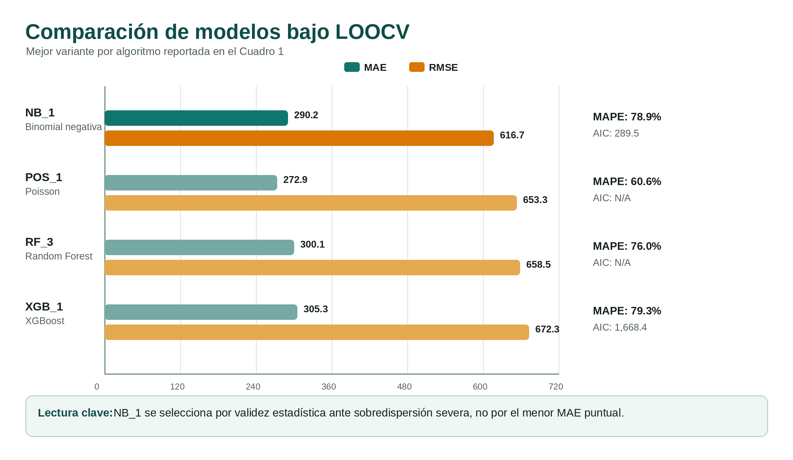
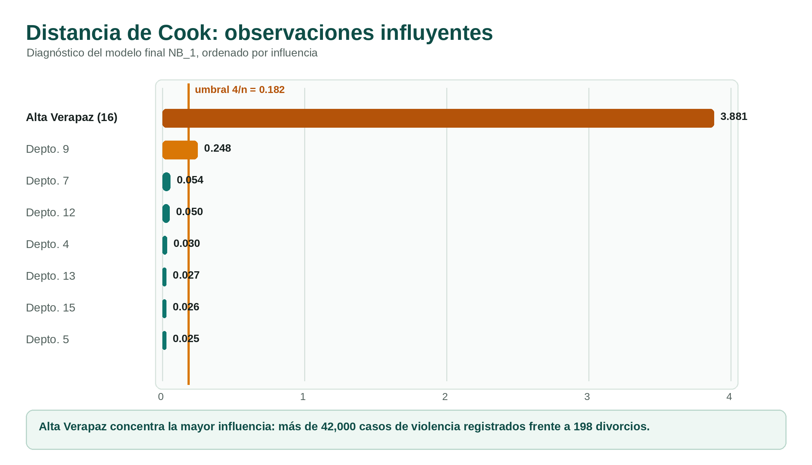

Predicción de divorcios departamentales mediante regresión binomial negativa
Relación con casos registrados de violencia intrafamiliar
Mario Fernando Rocha, Luis Pedro Lira, Juan Francisco Martínez, Joel Antonio Jaquez López, Luis Gilberto González Marroquín
Departamento de Ciencias de la Computación, Facultad de Ingeniería, Universidad del Valle de Guatemala
Introducción
La violencia intrafamiliar y el divorcio son fenómenos sociales registrados oficialmente por el INE, pero su comportamiento varía entre departamentos por urbanización, acceso a servicios legales, concentración poblacional y subregistro.
El estudio evalúa si los casos registrados de violencia intrafamiliar aportan información útil para explicar o predecir los divorcios departamentales en 2022.
Objetivos
Construir una base departamental con registros del INE 2022.
Caracterizar la heterogeneidad territorial de los divorcios.
Evaluar la asociación entre violencia intrafamiliar y divorcios.
Comparar modelos con validación Leave-One-Out.
Datos
22departamentos
9,945divorcios
>100kcasos de violencia
949varianza / media
Métodos
Microdatos de violencia intrafamiliar y divorcios del INE.
Filtrado al año 2022 y agregación por departamento.
Recodificación de 99 y 999 como datos no registrados.
Estandarización z-score de predictores numéricos.
Variable dummy es_capital para Guatemala.
Comparación de NB, Poisson, Random Forest y XGBoost.
Comparación de modelos

Bajo LOOCV, Poisson obtuvo menor MAE, pero la sobredispersión severa invalida su uso inferencial. NB_1 ofrece el mejor balance entre ajuste, parsimonia e interpretación.
Hallazgos exploratorios
Los divorcios por departamento oscilaron entre 137 y 3,295 casos.
La mediana fue 300 y la media 452, señal de asimetría positiva.
Guatemala registró 3,295 divorcios, entre seis y ocho veces más que el segundo departamento.
La correlación violencia-divorcios fue r = 0.82, sensible a la presencia de Guatemala.
La violencia total estandarizada mostró dirección positiva, aunque el intervalo de confianza cruza 1 y el p-valor no alcanza significancia convencional.
Influencia y diagnóstico

Alta Verapaz fue la observación más influyente: más de 42,000 casos de violencia registrados y 198 divorcios, una proporción inusual dentro del conjunto.
Validación
Se usó Leave-One-Out por el tamaño muestral de 22 departamentos.
Cada iteración entrenó con 21 departamentos y predijo el restante.
Las métricas finales promediaron los errores de las 22 iteraciones.
La selección priorizó ajuste estadístico, interpretabilidad y parsimonia.
Limitaciones
El tamaño muestral está fijado por la unidad departamental.
El diseño transversal permite asociación, no causalidad.
El subregistro puede ser mayor en zonas rurales, indígenas o con menor acceso institucional.
Implicación metodológica
Ignorar la sobredispersión puede producir inferencias artificialmente confiadas.
La binomial negativa incorpora variabilidad extra y ofrece conclusiones más conservadoras.
En política pública, la elección del modelo cambia cómo se interpretan los patrones sociales.